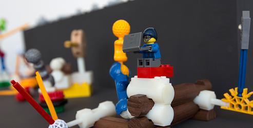

¿Cómo el proyecto hackea a Lego y otras marcas?
Una de las características más importantes del proyecto es cómo alcanza la interoperabilidad entre casi 10 marcas de bloques de construcción, implicando la apertura “forzada” de sistemas previamente cerrados a través de adaptadores de libre acceso. Bajo ese contexto, el kit es un ejemplo de hackers open source en diseño.

El kit permite la multiplicación del potencial de cada sistema de construcción que se hackea, habilitando la hibridación y creación de diseños previamente imposibles con las colecciones originales. Esto enriquece el valor de cada bloque y extiende su vida útil, permitiendo que el niño mantenga su interés en ellos más allá de las edades pensadas por cada marca.